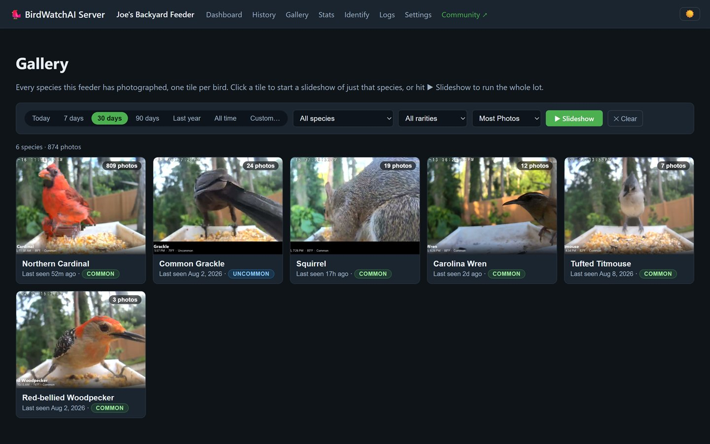
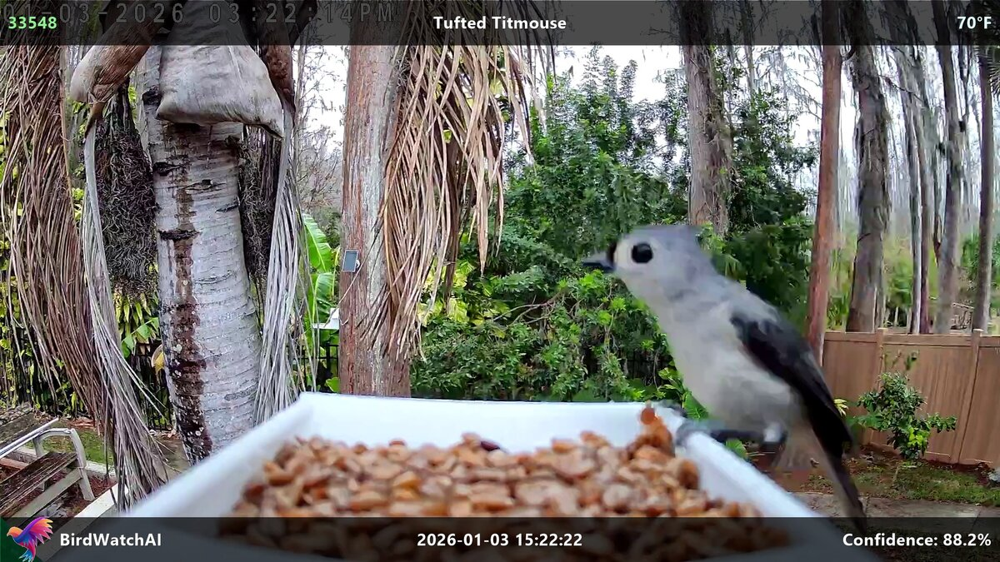
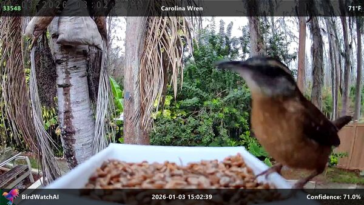
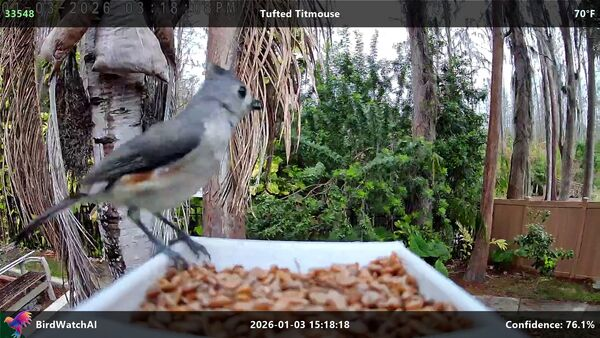
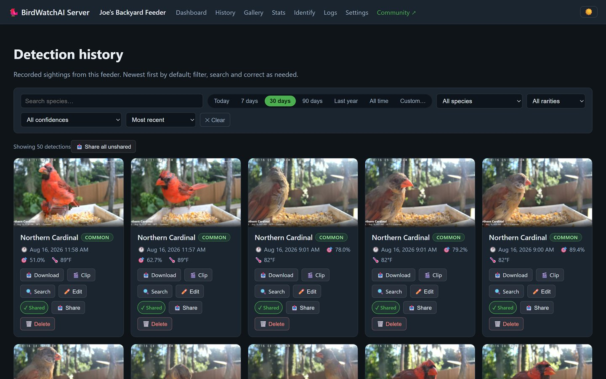
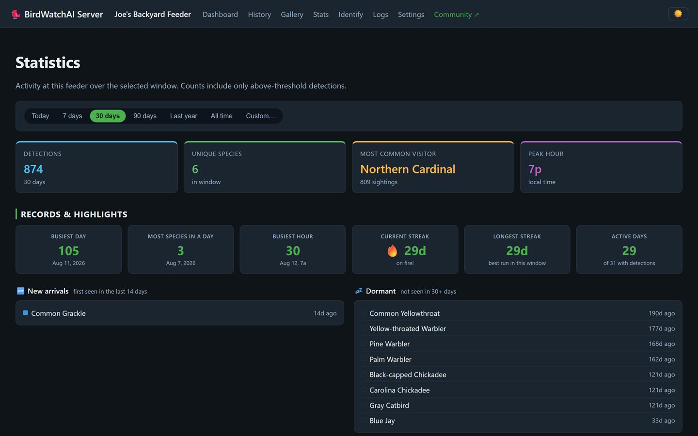
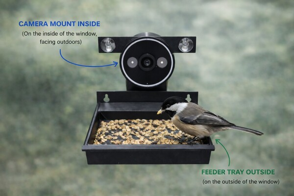
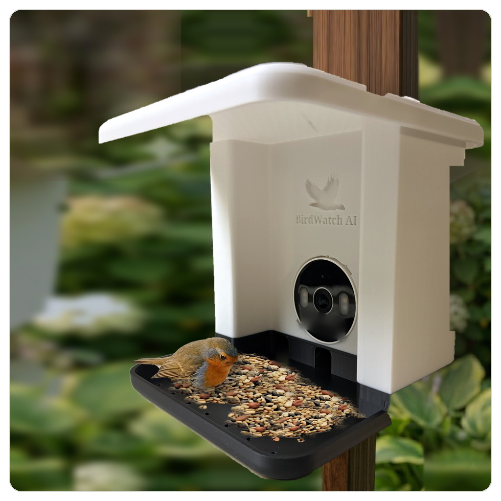
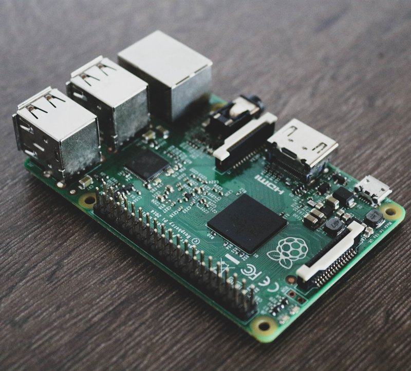
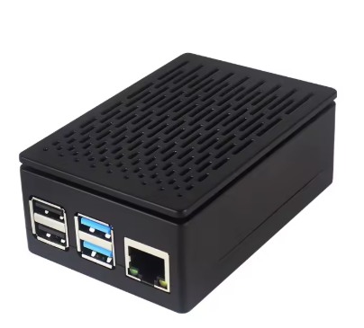

BirdWatchAI connects to your camera and uses artificial intelligence to automatically detect, identify, and notify you of bird visitors — even when you're away.
14-day free trial • No credit card required

Where birds are being spotted by BirdWatchAI feeders across the country.
Real birds, real feeders — spotted by BirdWatchAI users right now.
The best moments from community feeders over the past 7 days.
Species detected this month — see what's passing through right now.
Powerful features designed for bird enthusiasts who want to see every visitor.
Our trained neural network identifies 965+ North American bird species in real-time. Get instant notifications with species name, confidence level, and rarity for your location.
Works with most IP cameras including popular TAPO C113. Easy setup wizard guides you through camera configuration.
Captures and saves photos of every bird detection with beautiful overlays showing species, time, temperature, and more.
Record video clips when birds are detected. Never miss a special moment at your feeder.
Get push notifications via Pushover or email alerts with photos. Know when rare species visit!
Weekly and monthly summary reports with detection stats, species counts, and your best snapshots.
Automatically records temperature at detection time based on your location's zip code.
All processing happens locally on your computer. Your camera feed and data never leave your home.
Simple setup gets you watching birds faster.
Point any RTSP-compatible camera at your bird feeder. Our setup wizard walks you through the process, with special guides for popular cameras like the TAPO C113.
Click "Start" and BirdWatchAI begins watching your feeder. Motion detection triggers the AI to identify any birds that appear.
Receive instant notifications on your phone with photos. Review your detection history, browse snapshots, and enjoy weekly summary reports.
A glimpse of what BirdWatchAI looks like.





Join a growing community of backyard bird enthusiasts.
"I never knew how many species visited my feeder until BirdWatchAI showed me. I've logged over 30 species in three months — including a Painted Bunting I would have completely missed!"
"Setup took five minutes with my TAPO camera. Now my kids race to check the app every morning to see what birds visited overnight. It's become our family's favorite hobby."
"The community feed is addictive. I love seeing what other feeders are catching across the country. And the weekly digest email is the highlight of my Sunday morning."
See real-time bird detections from community feeders — no download required.
This is a live feed from real BirdWatchAI feeders. Imagine this on your own website or blog!
Explore the Community FeedActive BirdWatchAI feeders sharing their detections with the world.
Buy once, own it. No subscriptions, no hidden fees, just great bird watching.
Spots the bird and names it
Where the birds actually land
Watches the feeder day and night
Runs the software around the clock
Bring the ones you already own and buy the rest. Below is what each piece is; the builder at the bottom is where you choose and see the price.
The pieces
Four things to choose between, and a lens if you want one. No prices here on purpose — pick what you want in the builder below and it totals everything up in one place.
The part that watches the camera and tells you what landed. Runs on a computer in your home rather than in the cloud, so your footage never leaves the house unless you choose to share it.
Free to try for 14 days — download it and see what turns up before you buy anything.

The feeder sticks to the outside of a window and the camera mounts on the inside, looking out through the glass. Made for apartments and condos where there is nowhere to put a post.

A feeder that mounts on a post, with a bay built for the camera, so the lens sits at the right distance and stays out of the weather. The one to pick if you have a yard.
An RTSP camera matched to whichever feeder you choose, so the framing and focus distance are right out of the box. Already own an RTSP camera — Tapo, Reolink, Wyze, Amcrest? Leave this out and point the software at yours instead.
A snap-on lens that tightens the shot for smaller visitors. Chickadees, wrens and finches fill much more of the frame, which makes for better photos and gives the AI more to work with.

Plenty for one feeder camera running around the clock. About the size of a deck of cards, silent and fanless, and it needs no monitor or keyboard — plug it into power and your network anywhere in the house.

The same job done faster. Worth it when the feeder gets busy and several birds land at once, or when you have built up years of history and want the dashboard to stay quick.
💾 Either computer comes with a 30 GB SSD for snapshots and recent clips, or a 250 GB SSD if you want to keep a full season of video. Both watch a single feeder camera; the difference is speed and how much history they hold comfortably. See what setup looks like before you buy.
Build & price
Choose a version of each piece, or leave out the ones you already own. The price updates as you go, and anything you skip is listed so you can see exactly what is and isn't in the box.
🪺 Every build arrives assembled and configured — the software is already installed on the computer and already pointed at the camera. Adding pieces later costs exactly the same as buying them together, so starting small never costs you anything. 💳 Secure payment via Gumroad; your license key is emailed within 24 hours.
Sharing sightings to the community feed puts your photos, video clips, and stats on our servers so other feeder watchers can see them. Today that costs nothing, no matter how much you share.
Longer term, Basic will stay free with 14 days of photo and clip storage, and paid tiers will offer longer retention for anyone who wants a permanent archive. Nothing changes yet — everything is free while the feed grows, and we'll announce any change well ahead of time.
What you need to get started.
BirdWatchAI runs on a machine in your home, not in the cloud, so it needs somewhere to live. Any of these work — or let us send you one ready to go.
Download BirdWatchAI and start your 14-day free trial today.
Download for WindowsVersion 2.1.2.0 • Windows 10/11 • 102 MB
Need help setting up? Read the complete User Manual (covers Windows desktop, Raspberry Pi, and Docker), our Setup Guide, or the TAPO C113 Camera Guide.
Turn your idle screens into a live bird gallery. Displays community photos with beautiful transitions across all your monitors.
Download ScreensaverFree • Windows 10/11 • Multi-monitor support
Running the Raspberry Pi or Docker server? BirdWatchFinder scans your network, hands you a clickable link to your server's dashboard, and finds your Tapo / ONVIF cameras' IP addresses for setup — no IP hunting.
Download FinderFree • Windows 10/11 • Scans your local network
Not code-signed yet — if Windows SmartScreen warns, click More info → Run anyway.
BirdWatchAI works with any camera that supports RTSP streaming. We recommend the TAPO C113 for its excellent image quality and affordable price (~$30). Other popular options include Wyze, Reolink, and Amcrest cameras.
No! All processing happens 100% locally on your computer. Your camera feed, snapshots, and data never leave your home network. We take privacy seriously.
Our AI model recognizes 965+ North American bird species with high accuracy. You can adjust the confidence threshold to balance between catching more birds vs. reducing false positives.
Yes. There are two editions. The desktop app is Windows-only (Windows 10 and 11), but the server edition runs on Windows, Linux, and macOS — you use it from a browser on any device in your house instead of a desktop window. If you'd rather not set one up, a preloaded Raspberry Pi arrives with the server edition already running.
After 14 days, the app will continue to work but exports will have a watermark. Simply purchase a license key to remove the watermark and unlock full functionality forever.
Bird detection works offline! You only need internet for push notifications, email alerts, and weather data. The core functionality works completely locally.